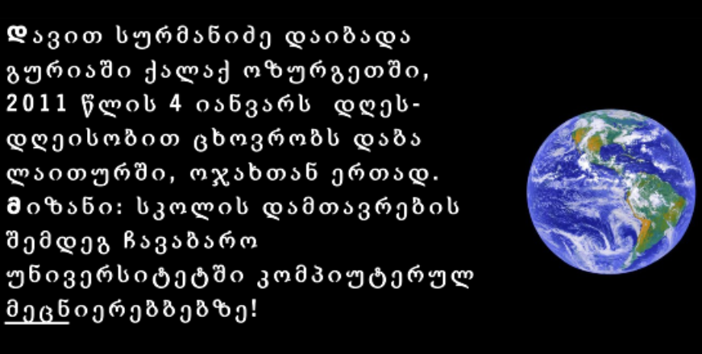

სატესტო
პირველად 14 წლის ასაკში
დავით სურმანიძე
2011. 01. 04.
მუსიკის სახელი:George Michael - Careless Whisper
მე გალაკტიონს ვეთაყვანები,
და მას ვამეფებ პოეზიაში,
ის პოეზიის მეფედ-მეფეა,
და გენიოსი მთელ მსოფლიოში.
19.11.2020
მე ზამთარი მიყვარს,
თოვლის ბაბუს ნახვა,
და დედიკოს კოცნა,
გულში მაგრად ჩაკვრა.
16.11.2020
მე ის მიყვარს ძალიან,
მისი გულში ჩაკვრა,
სულმინდა, რომ ვეფერო,
და გადავკოცნო მარად.
16.11.2020
იებს დავკრეფ და მოგიძღვნი,
ჩემო კარგო ბებია,
ლექსის წერა მეც დავიწყე,
სულ არ გამჭირვებია.
11.04.2020
შემოდგომა მოვიდა,
ხიდან წყალი გაქრა,
ჩიტიც აღარ ჭიკჭიკებს,
გადაფრინდა სადღაც.
ხემ სამოსი განიხადა,
გაიტიტვლა თავი,
მხოლოდ ბუჩქი ღა გადარჩა,
და ჭრიჭინა ყვავი.
08.05.2020
მიყვარს წერა მიყვარს კითხვა,
მიყვარს კარგი მწვადები,
დავჯდებით და ვიქეიფებთ,
კალათბურთის ფანები.
04.06.2020
მე ქვეყანა მიყვარს,
მე არ ვაქცევ ზურგზსაო,
რომც სიკვდილის პირას ვიყო,
თავს გავწირავ მის გამო!
17.11.2020
მე იქ გავხდი ბეჯითი,
და შევისწავლე ბუნება,
თანაც ნიჭი მომემატა,
და ახლა ვარ პოეტა!
20.11.2020
მე ცისფერი ბლოკნოტი მაქვს,
ბრჭყვიალა და ლამაზი,
მას მე პოეტ დავაწერე,
და ვუწოდე ალმასი.
20.11.2020